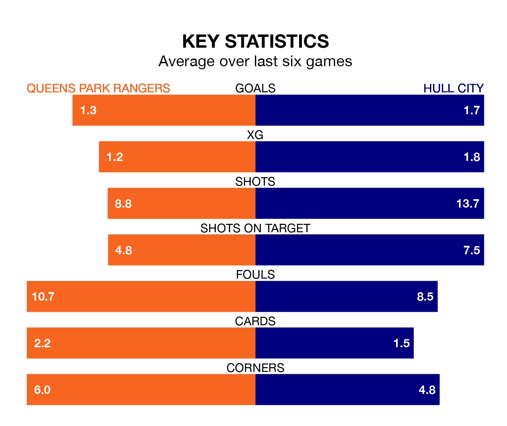

Struggling Queens Park Rangers face Hull City at Loftus Road on Saturday looking to build on a win in their last league outing.
After securing all three points with a 2-0 victory over Preston North End on December 1, QPR sit 22nd in the Championship.
They travel to play a Hull side sixth in the standings, who lost in their last match, 2-1 against Watford, on December 2.
In the last 10 years, QPR and Hull have played each other on 14 occasions. QPR won four of them, Hull seven, and they drew three times.
On average, QPR scored 1.4 goals and the Tigers 1.8 in those matches.
Their last meeting was on January 28, when Hull won 3-0 at home.
With 17 goals in 19 games so far this season, QPR are the league's joint-third-lowest scorers with 0.9 goals per game. And they are conceding more than average, letting in 30 goals at a rate of 1.6 per game.
Hull, meanwhile, are above average scorers, with 1.5 goals per game, compared to a league average of 1.4. They have conceded 1.3 goals per game.
Rangers are in mixed form in the Championship, with two wins and two draws from their last six games.
With three wins and a draw over that period, City's form is slightly better – they have taken 10 points from 18, compared to the home side's eight.
